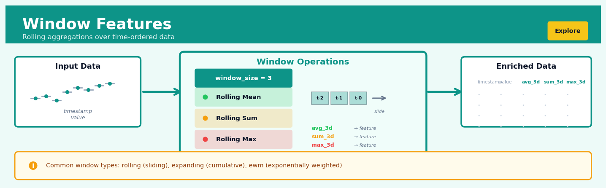

Window Features#


The most critical mistake with window features is data leakage from improper train-test splits. Always calculate your rolling statistics separately for train and test sets, never fit a rolling mean across the entire dataset and then split. When I see models with suspiciously high validation scores on time series problems, window feature leakage is usually the culprit.
The 60-Second Version#
What it does: Window features turn each row’s nearby neighbours into new predictive signals by calculating averages, totals, or trends from surrounding observations.
When to use it: When the past few transactions, days, or events contain patterns that help predict what happens next—sales momentum, patient vitals trending up, or customer behaviour shifting over recent sessions.
What you get back: New columns that capture “what’s been happening lately” around each observation, ready to feed into models that wouldn’t otherwise see those local patterns.
Difficulty |
Moderate |
Typical runtime |
Seconds on 100K rows; minutes for complex multi-window calculations |
What you bring |
Sequential or time-ordered data with a meaningful sort key |
What you get |
Additional columns containing rolling statistics (means, sums, counts, etc.) |
Heuristix bucket |
Explore — Shaping & Transforming Data |
Window features leak future information if applied carelessly—always ensure your window looks backward in time, never forward into data your model wouldn’t have at prediction time.
Learning Objectives#
After reading this chapter, a business user will be able to:
Identify situations where recent trends, moving averages, or short-term patterns in your data (like last week’s sales or trailing customer activity) would improve predictions or reveal insights.
Interpret window feature outputs such as 7-day moving averages, rolling standard deviations, or recent growth rates, and explain to stakeholders what these metrics reveal about changing customer behavior, demand patterns, or operational trends.
Decide which time windows (hourly, daily, weekly) are most relevant for monitoring business metrics and setting alert thresholds based on rolling statistics rather than single-point observations.
After reading this chapter, a data scientist will be able to:
Implement rolling window calculations correctly in production pipelines, handling edge cases like insufficient historical data at sequence boundaries, missing values within windows, and proper alignment to avoid data leakage.
Configure window sizes and aggregation functions (mean, sum, min, max, std, quantiles) by balancing the trade-off between capturing sufficient context and maintaining responsiveness to recent changes while managing computational cost.
Validate window features by checking for information leakage across temporal boundaries, diagnosing unstable features caused by non-stationarity or outliers, and identifying when window statistics fail due to sparse data or irregular sampling intervals.
Overview#
Window features (also called rolling or sliding window features) are a family of feature engineering techniques that compute aggregate statistics over a specified neighbourhood of observations, typically defined by temporal ordering or sequential position. The core purpose is to capture local patterns, trends, and contextual information by summarising the behaviour of a variable within a moving frame that “slides” across the dataset. Window features belong to the broader family of lag-based and sequential feature engineering methods, and they are foundational to time series analysis, signal processing, and any supervised learning task where the temporal or sequential structure of data carries predictive information.
When to Use This#
Forecasting with machine learning models: When building gradient boosting or neural network models for time series prediction, use window features to inject temporal context that these models cannot learn implicitly from raw timestamps.
Detecting regime changes or anomalies: When you need to identify when a process has shifted from its recent typical behaviour, comparing current values to rolling statistics provides a natural baseline for anomaly scores.
Smoothing noisy measurements: When sensor data, financial prices, or other high-frequency signals contain measurement noise that obscures underlying trends, rolling means or medians act as low-pass filters.
Capturing momentum or trend direction: When recent directional movement (e.g., stock price momentum, user engagement trajectory) is predictive, rolling differences or slopes over windows quantify this signal.
Engineering features for event prediction: When predicting customer churn, machine failure, or fraud, window features over recent transaction counts, error rates, or behavioural metrics encode the “recent history” that drives these events.
Handling irregular time series in ML pipelines: When your model requires fixed-width feature vectors but your raw data arrives at irregular intervals, window aggregations over time-based windows create consistent features.
Creating baseline comparisons: When you need to express current values relative to recent norms (e.g., “sales today vs. average of last 7 days”), window features provide the denominator for ratio or z-score calculations.
Do NOT use this when observations are independent: If your data has no meaningful ordering (e.g., cross-sectional survey responses), window features introduce spurious correlations based on arbitrary row order.
Do NOT use this when look-ahead bias is a risk and you cannot enforce causality: In predictive modelling, using centred or forward-looking windows on the target or related variables causes data leakage and invalidates model evaluation.
Do NOT use this when window sizes exceed data availability: If you specify a 30-day rolling window but most entities have fewer than 30 observations, the resulting features will be dominated by missing values or unstable estimates.
Questions This Answers#
Understanding Recent Performance and Momentum#
Is our revenue growth accelerating or slowing down compared to the last 30 days?
Why did customer complaints spike last week — was it a one-time event or part of a worsening trend?
Are we seeing sustained improvement in production quality, or are we just having a few good days?
How volatile has our website traffic been over the past two weeks compared to our usual pattern?
Is the recent drop in daily active users a temporary dip or the beginning of a decline?
Predicting What Happens Next#
If order volumes continue trending the way they have for the past 10 days, will we hit our monthly target?
Based on how this product’s sales have moved over the last quarter, what should we expect next month?
Can we predict tomorrow’s call centre volume based on the pattern we’ve seen in the last 5 business days?
Will this customer churn in the next 30 days given their declining engagement over the past 60 days?
Should we increase inventory next week based on the sales momentum we’re seeing this week?
Making Better Operational Decisions#
Which stores should get additional staff next weekend based on their recent foot traffic patterns?
Should we pause this marketing campaign, or is performance improving when we look at the 7-day rolling average?
Are the changes we made two weeks ago actually working, or is it too noisy to tell without smoothing the data?
Which machines are showing deteriorating performance over the past month and need preventive maintenance soon?
How It Works#
Imagine you’re a teacher grading a student named Sarah who takes a quiz every Friday. If you look at just her score from last week—say, 78%—you get a snapshot, but not the full story. But if you calculate her average over the last four weeks (75%, 72%, 78%, 81%), you immediately see an upward trend. That rolling average of 76.5% tells you something her single most recent score doesn’t: she’s improving. Next week, when she scores 84%, you drop the oldest score (75%) and recalculate using the most recent four weeks (72%, 78%, 81%, 84%), getting a new average of 78.75%. This moving window of context helps you understand not just where Sarah is, but where she’s headed.
ORIGINAL TIME SERIES DATA:
┌──────┬───────┬───────┬───────┬───────┬───────┬───────┐
│ Week │ 1 │ 2 │ 3 │ 4 │ 5 │ 6 │
├──────┼───────┼───────┼───────┼───────┼───────┼───────┤
│Score │ 75 │ 72 │ 78 │ 81 │ 84 │ 87 │
└──────┴───────┴───────┴───────┴───────┴───────┴───────┘
COMPUTING 3-WEEK ROLLING AVERAGE:
┌─────────────┐
Week 1-3│ 75 72 78 │→ avg = 75.0 (new feature row 3)
└─────────────┘
┌─────────────┐
Week 2-4 │ 72 78 81 │→ avg = 77.0 (new feature row 4)
└─────────────┘
┌─────────────┐
Week 3-5 │ 78 81 84 │→ avg = 81.0 (new feature row 5)
└─────────────┘
┌─────────────┐
Week 4-6 │ 81 84 87 │→ avg = 84.0 (new feature row 6)
└─────────────┘
ENRICHED DATASET WITH NEW FEATURE:
┌──────┬───────┬───────────────────┐
│ Week │ Score │ Rolling_Avg_3wk │
├──────┼───────┼───────────────────┤
│ 3 │ 78 │ 75.0 │
│ 4 │ 81 │ 77.0 │
│ 5 │ 84 │ 81.0 │
│ 6 │ 87 │ 84.0 │
└──────┴───────┴───────────────────┘
Step 1: Define the window size. You choose how many consecutive observations to include in each calculation—this is your “lookback period.” A three-day window, a ten-transaction window, or a four-week window all work the same way. The size determines how much historical context you’re capturing.
Step 2: Choose an aggregation function. Decide what summary statistic you want: average (like Sarah’s grades), sum (total sales in the window), maximum (peak temperature), minimum (lowest inventory), or standard deviation (how volatile the values are). Each tells a different story about the local neighbourhood.
Step 3: Position the window at the earliest valid point. You can’t calculate a four-week average until you have four weeks of data, so the first few rows won’t have window features yet. Start where you have enough history.
Step 4: Calculate the statistic for that window. Take all the values inside your current window frame and compute your chosen aggregate. This becomes the new feature value for the current observation.
Step 5: Slide the window forward one position. Move one row down in your dataset. The window drops the oldest observation and includes the newest one. Now you’re looking at a fresh neighbourhood of data.
Step 6: Repeat the calculation. Compute the same aggregate statistic over this new window. Continue sliding and calculating until you’ve processed every valid position in your dataset.
Step 7: Attach the results as new columns. Each window calculation becomes a new feature alongside your original data, enriching every row with local context about what happened just before it.
The key insight: Window features transform isolated data points into observations embedded in their recent history, allowing models to detect momentum, trends, and local volatility that single snapshots completely miss.
The Intuition#
Imagine you are a doctor monitoring a patient’s blood pressure. A single reading of 145/90 mmHg might be concerning—or it might be a momentary spike caused by the patient rushing to the appointment. To make a sound clinical judgement, you naturally consider context: what were the last five readings? Has there been an upward trend over the past month? Is today’s reading unusually high compared to the patient’s personal baseline? You are instinctively computing window features—averages, trends, and deviations over recent observations—because isolated measurements lack the context needed for reliable interpretation.
This intuition extends directly to machine learning. Suppose you are predicting whether a manufacturing machine will fail in the next shift. The current vibration reading alone is weakly predictive; what matters is whether vibration has been increasing, whether it exceeds the machine’s recent typical range, and how variable the readings have been. By computing the rolling mean, rolling standard deviation, and rolling trend slope over the last 100 sensor readings, you transform a single noisy measurement into a rich feature vector that captures the machine’s recent operational state. The model can then learn patterns like “failure is likely when current vibration exceeds the 7-day rolling mean by more than two rolling standard deviations.”
The sliding window acts like a magnifying glass that you drag across your time series, pausing at each position to summarise what you see within the frame. The window size controls the trade-off between responsiveness and stability: narrow windows react quickly to changes but are noisy; wide windows are smooth but lag behind true shifts. Choosing the right window size—and often engineering features at multiple window sizes simultaneously—is where domain knowledge meets statistical craft. A retail forecaster might use 7-day windows to capture weekly seasonality, 28-day windows for monthly patterns, and 365-day windows for year-over-year comparisons, stacking these features to give the model a multi-scale view of demand dynamics.
The Mathematics#
Formal Setup and Notation#
Let \(\{x_t\}_{t=1}^{T}\) denote a univariate time series with \(T\) observations indexed by discrete time \(t\). We define a trailing window of size \(w\) at time \(t\) as the set of indices:
The corresponding window of observations is \(\{x_s : s \in W_t^{(w)}\}\). For \(t < w\), the window is incomplete; handling this boundary condition is discussed below.
Rolling Mean#
The rolling mean (simple moving average) at time \(t\) is defined as:
For a complete window (\(t \geq w\)), this simplifies to:
The rolling mean is an unbiased estimator of the local mean \(\mathbb{E}[X_t]\) under the assumption of local stationarity.
Rolling Variance and Standard Deviation#
The rolling variance with Bessel’s correction is:
The rolling standard deviation is \(s_t^{(w)} = \sqrt{s_t^{2,(w)}}\). These statistics quantify local volatility and are essential for normalisation and anomaly detection.
Rolling Quantiles#
For a given probability \(p \in (0,1)\), the rolling quantile \(Q_t^{(w)}(p)\) is the \(p\)-th quantile of the observations in \(W_t^{(w)}\). Formally, if we denote the order statistics of the window as \(x_{(1)} \leq x_{(2)} \leq \cdots \leq x_{(|W_t^{(w)}|)}\), then:
with interpolation applied for fractional indices in practice. Rolling medians (\(p = 0.5\)) are robust alternatives to rolling means when outliers are present.
Rolling Min and Max#
These bound the local range and are useful for detecting extremes.
Exponentially Weighted Moving Average (EWMA)#
An alternative to uniform weighting is exponential decay, which gives more weight to recent observations:
where \(\alpha \in (0, 1]\) is the smoothing parameter. This can be expressed in closed form as:
The effective window size is approximately \(\frac{2 - \alpha}{\alpha}\), providing a mapping between EWMA and rolling window approaches.
Rolling Linear Trend (Slope)#
To capture the direction and rate of change within a window, we fit a simple linear regression \(x_s = \beta_0 + \beta_1 s + \epsilon_s\) for \(s \in W_t^{(w)}\). The rolling slope \(\hat{\beta}_{1,t}^{(w)}\) is given by the ordinary least squares estimator:
where \(\bar{s} = \frac{1}{w}\sum_{s \in W_t^{(w)}} s\). For equally spaced indices with window \(\{t-w+1, \ldots, t\}\), the denominator simplifies to \(\frac{w(w^2 - 1)}{12}\).
Assumptions#
Ordering is meaningful: The index \(t\) represents a genuine sequential or temporal order; shuffling observations invalidates all window features.
Local stationarity: Window statistics are interpretable as local parameters only if the underlying process is approximately stationary within each window.
No look-ahead: For causal (predictive) applications, windows must be strictly backward-looking; the window \(W_t^{(w)}\) must not include any \(s > t\).
Sufficient data: The window size \(w\) must be small enough relative to \(T\) that meaningful features can be computed for most observations.
Edge Cases and Boundary Handling#
At the beginning of a series (\(t < w\)), complete windows are unavailable. Common strategies:
NaN padding: Return missing values for incomplete windows, handled downstream by imputation or model-native missing support.
Partial windows: Compute statistics using available observations, with
min_periodscontrolling the minimum required count.Expanding windows: Use all observations from the start up to \(t\), formally \(W_t^{(\text{expand})} = \{1, 2, \ldots, t\}\).
Relationship to Convolution and Signal Processing#
The rolling mean with uniform weights is equivalent to convolution with a rectangular kernel. Defining the kernel \(k_i = \frac{1}{w}\) for \(i \in \{0, \ldots, w-1\}\), we have:
This connection links window features to the broader theory of linear time-invariant filters, Fourier analysis, and frequency-domain smoothing.
Understanding the Mathematics#
Rolling Mean#
The equation:
Read it aloud:
“The rolling mean at time t with window size w equals one divided by w, multiplied by the sum of all values from the current observation back through the previous w minus one observations.”
What each symbol means:
\(\bar{x}_t^{(w)}\) = the rolling average at time point t using window size w
\(w\) = the window size (how many observations to include)
\(\sum_{i=0}^{w-1}\) = “sum up starting from i=0 up to i=w-1”
\(x_{t-i}\) = the observation that is i steps back from time t
\(\frac{1}{w}\) = divide by the count to get the average
A concrete numerical example:
You’re tracking daily website visits: [120, 150, 130, 140, 160] visitors over five days. Calculate a 3-day rolling mean for day 5.
The 3-day rolling average is 143 visitors.
Why this equation matters:
Rolling means smooth out daily noise to reveal underlying trends—without them, you’d mistake random Tuesday spikes for genuine growth signals.
Rolling Standard Deviation#
The equation:
Read it aloud:
“The rolling standard deviation at time t equals the square root of: one divided by w minus one, times the sum of each observation minus the rolling mean, all squared.”
What each symbol means:
\(s_t^{(w)}\) = rolling standard deviation at time t
\(\sqrt{\phantom{x}}\) = square root operator
\(x_{t-i} - \bar{x}_t^{(w)}\) = how far each point deviates from the rolling mean
\((...)^2\) = square the deviation to make all values positive
\(\frac{1}{w-1}\) = Bessel’s correction for sample variance
A concrete numerical example:
Using the same website traffic [130, 140, 160] with rolling mean = 143.33:
The variability is about 15 visitors.
Why this equation matters:
Standard deviation quantifies volatility—a stock trading algorithm must know whether price swings are normal fluctuations or genuine anomalies requiring action.
Exponentially Weighted Moving Average (EWMA)#
The equation:
Read it aloud:
“The exponentially weighted average at time t equals alpha times the current observation, plus one minus alpha times the previous exponentially weighted average.”
What each symbol means:
\(y_t\) = the EWMA value at time t
\(\alpha\) = smoothing parameter between 0 and 1 (higher = more weight on recent data)
\(x_t\) = current raw observation
\(y_{t-1}\) = previous EWMA value
\((1-\alpha)\) = weight given to historical information
A concrete numerical example:
Your factory measures hourly temperature: previous EWMA was 72°F, current reading is 78°F, and α = 0.3:
The new smoothed temperature is 73.8°F—not fully reacting to the 78°F spike.
Why this equation matters:
EWMA gives recent data more weight without completely discarding history, making it perfect for adaptive systems that must balance responsiveness with stability.
The Big Picture#
All window feature mathematics shares one goal: quantify how the recent past behaves. The rolling mean and standard deviation treat all observations in the window equally, like a democratic vote where each of the last w days gets equal say. The EWMA instead implements a weighted vote where yesterday matters more than last week, which matters more than last month—the influence decays exponentially. We choose these specific formulas because they’re computationally efficient (you can update them incrementally without recalculating everything) and statistically robust (they have well-understood properties for inference). The mathematical essence is this: we’re building a memory system that summarizes “what normal looks like lately” so we can detect when something changes.
Python Implementation#
import numpy as np
import pandas as pd
from scipy import stats
# ---------------------------------------------------------------------
# Generate realistic synthetic time series data
# Simulating daily sales with trend, seasonality, and noise
# ---------------------------------------------------------------------
np.random.seed(42)
n_days = 365
# Time index
dates = pd.date_range(start='2023-01-01', periods=n_days, freq='D')
# Components: linear trend + weekly seasonality + noise
trend = 0.5 * np.arange(n_days)
weekly_seasonality = 20 * np.sin(2 * np.pi * np.arange(n_days) / 7)
noise = np.random.normal(0, 10, n_days)
# Combine into sales series
sales = 100 + trend + weekly_seasonality + noise
# Create DataFrame
df = pd.DataFrame({'date': dates, 'sales': sales})
df.set_index('date', inplace=True)
print("Raw data (first 10 rows):")
print(df.head(10))
print()
# ---------------------------------------------------------------------
# Example 1: Basic Rolling Statistics
# Compute rolling mean, std, min, max over a 7-day trailing window
# ---------------------------------------------------------------------
window_size = 7
df['rolling_mean_7d'] = df['sales'].rolling(window=window_size).mean()
df['rolling_std_7d'] = df['sales'].rolling(window=window_size).std()
df['rolling_min_7d'] = df['sales'].rolling(window=window_size).min()
df['rolling_max_7d'] = df['sales'].rolling(window=window_size).max()
# Rolling median (robust to outliers)
df['rolling_median_7d'] = df['sales'].rolling(window=window_size).median()
print("Rolling statistics (7-day window):")
print(df[['sales', 'rolling_mean_7d', 'rolling_std_7d',
'rolling_min_7d', 'rolling_max_7d']].iloc[5:15])
print()
# ---------------------------------------------------------------------
# Example 2: Multiple Window Sizes for Multi-Scale Features
# Capture short-term and long-term patterns simultaneously
# ---------------------------------------------------------------------
for w in [7, 14, 30]:
df[f'rolling_mean_{w}d'] = df['sales'].rolling(window=w).mean()
df[f'rolling_std_{w}d'] = df['sales'].rolling(window=w).std()
print("Multi-scale rolling means:")
print(df[['sales', 'rolling_mean_7d', 'rolling_mean_14d',
'rolling_mean_30d']].iloc[28:35])
print()
# ---------------------------------------------------------------------
# Example 3: Exponentially Weighted Moving Average (EWMA)
# More weight on recent observations; span=7 approximates 7-day window
# ---------------------------------------------------------------------
df['ewma_span7'] = df['sales'].ewm(span=7, adjust=False).mean()
df['ewma_span30'] = df['sales'].ewm(span=30, adjust=False).mean()
print("EWMA comparison:")
print(df[['sales', 'rolling_mean_7d', 'ewma_span7']].iloc[10:20])
print()
# ---------------------------------------------------------------------
# Example 4: Rolling Z-Score for Anomaly Detection
# How many standard deviations is current value from rolling mean?
# ---------------------------------------------------------------------
df['rolling_zscore'] = (
(df['sales'] - df['rolling_mean_30d']) / df['rolling_std_30d']
)
# Flag anomalies: |z-score| > 2
df['is_anomaly'] = df['rolling_zscore'].abs() > 2
print("Anomaly detection with rolling z-score:")
print(df[df['is_anomaly']][['sales', 'rolling_mean_30d',
'rolling_std_30d', 'rolling_zscore']].head())
print(f"Total anomalies detected: {df['is_anomaly'].sum()}")
print()
# ---------------------------------------------------------------------
# Example 5: Rolling Linear Trend (Slope) using Apply
# Captures whether sales are trending up or down over window
# ---------------------------------------------------------------------
def rolling_slope(window_series):
"""Compute OLS slope over the window."""
if window_series.isna().any():
return np.nan
y = window_series.values
x = np.arange(len(y))
slope, _, _, _, _ = stats.linregress(x, y)
return slope
df['rolling_slope_14d'] = df['sales'].rolling(window=14).apply(
rolling_slope, raw=False
)
print("Rolling slope (14-day window) - trend direction:")
print(df[['sales', 'rolling_mean_14d', 'rolling_slope_14d']].iloc[20:30])
print()
# ---------------------------------------------------------------------
# Example 6: Grouped Rolling Features (by entity)
# Essential for panel data with multiple time series
# ---------------------------------------------------------------------
# Create panel data: multiple stores
df_panel = pd.DataFrame({
'date': np.tile(dates, 3),
'store_id': np.repeat(['A', 'B', 'C'], n_days),
'sales': np.concatenate([
sales, # Store A: baseline
sales * 1.2 + 50, # Store B: higher baseline
sales * 0.8 - 20 # Store C: lower baseline
])
})
# Compute rolling mean within each store
df_panel['rolling_mean_7d'] = (
df_
## Visualisations


## Using This in Heuristix
### What Data You'll Need
The Window Features node expects a **time series or sequentially ordered dataset** with at least one numeric column you want to aggregate. You'll typically connect this after a Sort node to ensure your data is properly ordered by date or sequence.
**Before Window Features:**
| date | product_id | sales |
|------------|------------|-------|
| 2024-01-01 | A | 100 |
| 2024-01-02 | A | 120 |
| 2024-01-03 | A | 115 |
**After Window Features (with 2-day rolling mean):**
| date | product_id | sales | sales_rolling_mean_2 |
|------------|------------|-------|----------------------|
| 2024-01-01 | A | 100 | NaN |
| 2024-01-02 | A | 120 | 110.0 |
| 2024-01-03 | A | 115 | 117.5 |
### Configuration Parameters
| Parameter | What It Controls | Sensible Default | When to Change It |
|-----------|-----------------|------------------|-------------------|
| **Target Column(s)** | Which numeric column(s) to compute windows over | None (required) | Select the metrics you want to track over time — sales, temperature, stock price, etc. |
| **Window Size** | How many rows to include in each calculation | 7 | Use smaller windows (3-5) for rapidly changing data; larger windows (30-90) for smoother, long-term trends |
| **Aggregation Function** | The statistic to compute (mean, sum, min, max, std, median) | mean | Use `sum` for cumulative totals, `std` for volatility detection, `min/max` for range tracking |
| **Group By Column(s)** | Compute separate windows per category | None (optional) | Essential when working with multiple products, stores, or customers — keeps their trends separate |
| **Min Periods** | Minimum observations required to compute a value | 1 | Set equal to window size to avoid partial calculations at the start of your series |
| **Center Window** | Whether to center the window on the current row | False | Enable for retrospective analysis where you want context from both sides of each point |
### What You'll Get
**New Columns:** The node adds one column per aggregation function, named using the pattern `{original_column}_{function}_{window_size}`. If you compute a 7-day rolling mean on `sales`, you'll get `sales_mean_7`.
**Summary Statistics:** The output panel displays how many features were created, the number of NaN values generated (expected at the start of the series), and warnings if any group has insufficient data.
**Preview Chart:** A line plot overlays your original column with the computed window feature, making it easy to visually confirm the smoothing or aggregation pattern looks correct.
### Connecting Downstream
**Most common next steps:**
- **Model Training nodes** — Window features are often your most predictive inputs for forecasting tasks
- **Feature Selection** — Test which window sizes and aggregations actually improve model performance
- **Transform nodes** — Create interaction features or ratios between different window sizes (e.g., short-term vs long-term averages)
- **Filter or Drop NaN** — Remove incomplete rows at the start of your dataset if your model can't handle missing values
### Quick Start: 7-Day Sales Trend
1. **Sort your data** by date within each product/store using a Sort node first
2. **Connect to Window Features** and select your `sales` column as the target
3. **Set window size to 7** and choose `mean` as the aggregation function
4. **Add `product_id` to Group By** if you have multiple products
5. **Run the node** and inspect the preview chart — your new rolling average should smooth out daily noise
6. **Connect to a Model Training node** and include both the original `sales` column and your new rolling feature as predictors
### Pro Tips
🎯 **Always sort first** — Window features are order-dependent. If your data isn't properly sorted by time and grouped by category, your windows will mix unrelated observations.
🎯 **Try multiple window sizes together** — Create 3-day, 7-day, and 30-day rolling means simultaneously. Short windows capture recent changes; long windows show overall trends. Models often benefit from both.
🎯 **Watch out for data leakage** — Never include future data in your window when building predictive models. The default backward-looking window is safe; centered windows are not.
🎯 **Handle leading NaNs thoughtfully** — The first N-1 rows will have NaN values. Either drop them, set `min_periods=1` to compute partial windows, or use forward-fill if you need complete data.
🎯 **Combine window features with lag features** — A rolling 7-day average from last week (lagged by 7 days) can be more predictive than just yesterday's rolling average alone.
## Config Recipes
### Recipe 1: Rapid Prototyping on Small Time Series
**When to use:** You're exploring a new dataset with <10,000 observations and want quick feedback on whether temporal patterns exist before investing in feature engineering.
**Settings:**
| Parameter | Value | Why |
|-----------|-------|-----|
| `window_sizes` | `[3, 7]` | Two windows capture immediate and weekly patterns without computation overhead |
| `functions` | `['mean', 'std']` | Mean shows trend, std shows volatility—minimal but informative |
| `min_periods` | `1` | Avoid NaN losses at sequence starts in small datasets |
| `center` | `False` | Keep causal structure for later modeling |
| `step` | `1` | No skipping—preserve all temporal resolution |
**What you get:** Light feature set (4 columns per input variable) computable in seconds, sufficient to identify if rolling statistics correlate with your target.
**Trade-off:** You miss complex patterns like skewness or percentile shifts that might matter in production.
---
### Recipe 2: Production-Grade Financial Forecasting
**When to use:** Deploying a trading signal or financial risk model where look-ahead bias would be catastrophic and regulatory audit requires defensible methodology.
**Settings:**
| Parameter | Value | Why |
|-----------|-------|-----|
| `window_sizes` | `[5, 21, 63, 252]` | Standard trading windows (week, month, quarter, year in business days) |
| `functions` | `['mean', 'std', 'min', 'max', 'quantile_25', 'quantile_75']` | Comprehensive statistics covering central tendency, dispersion, and tail behavior |
| `min_periods` | Equal to window size | Strict: only output when full window available—no partial calculations |
| `center` | `False` | Absolutely causal—zero look-ahead |
| `closed` | `'left'` | Exclude current observation to prevent target leakage |
| `step` | `1` | Every observation matters in financial applications |
**What you get:** 24 features per variable (4 windows × 6 functions) with guaranteed temporal integrity, suitable for regulatory scrutiny.
**Trade-off:** First 252 observations yield incomplete features; requires substantial warm-up data period.
---
### Recipe 3: Sensor Data with Irregular Sampling
**When to use:** IoT or medical device data where measurements arrive at inconsistent intervals (e.g., event-triggered readings, not fixed-frequency logs).
**Settings:**
| Parameter | Value | Why |
|-----------|-------|-----|
| `window_sizes` | `'30min', '2h', '24h'` | Time-based windows instead of observation counts |
| `functions` | `['mean', 'count', 'std']` | Count reveals sampling density; mean/std capture signal behavior |
| `min_periods` | `3` | Require minimum observations for statistical validity but tolerate sparsity |
| `center` | `False` | Maintain causal ordering |
| `closed` | `'both'` | Include boundaries—don't lose sparse measurements |
**What you get:** Features robust to sampling irregularity, where a 2-hour window always spans 2 hours of clock time regardless of measurement density.
**Trade-off:** Requires datetime index and resampling logic; computationally heavier than integer-position windows.
---
### Recipe 4: Anomaly Context in Stable Processes
**When to use:** Manufacturing quality control or infrastructure monitoring where the goal is detecting deviations from local norms, not long-term forecasting.
**Settings:**
| Parameter | Value | Why |
|-----------|-------|-----|
| `window_sizes` | `[50]` | Single, large window establishes "recent normal" baseline |
| `functions` | `['median', 'mad']` | Median and median absolute deviation are robust to outliers you're trying to detect |
| `min_periods` | `50` | Full window required for stable baseline |
| `center` | `True` | Centered windows give best local context for anomaly scoring |
| `step` | `10` | Downsample features—baseline changes slowly in stable processes |
**What you get:** Robust local baseline per variable; compute `(value - rolling_median) / rolling_mad` to get standardized anomaly scores.
**Trade-off:** Centered windows make this unsuitable for real-time prediction; offline analysis only.
## Business Applications
**Financial Services**
A regional US credit card issuer with 3.2 million active accounts was losing approximately $18M annually to fraud that bypassed rule-based detection systems. By engineering window features that captured rolling 7-day and 30-day statistics—average transaction size, transaction frequency, unique merchant count, and the standard deviation of purchase amounts—the fraud detection model identified unusual spending patterns in real time. The new system reduced false positives by 41% while catching 28% more genuine fraud cases, translating to $12.4M in annual savings and significantly fewer customer service calls from cardholders whose legitimate purchases were previously blocked.
**Retail & E-Commerce**
A European fashion retailer operating 340 stores needed to optimise inventory allocation across rapidly changing seasonal demand. Their data science team created 14-day and 28-day rolling window features capturing sales velocity, stockout frequency, return rates, and foot traffic patterns for each SKU at each location. These features fed a demand forecasting model that reduced excess inventory by 22% and cut stockouts by 31%, improving gross margin by 4.2 percentage points—worth approximately €27M annually across the chain.
**Healthcare**
A 600-bed hospital network in Australia struggled with ICU readmission rates that cost the system over $8M yearly in preventable complications. Clinical data scientists engineered rolling 6-hour and 24-hour window features from continuous patient monitoring data: moving averages and variances of heart rate, blood pressure, respiratory rate, and oxygen saturation. The early warning model identified at-risk patients 8–12 hours before clinical deterioration became obvious, reducing unplanned ICU readmissions by 37% and saving an estimated $3.1M annually while improving patient outcomes.
**Insurance**
A mid-sized UK motor insurer was haemorrhaging profit on policies that looked acceptable at underwriting but deteriorated rapidly. By creating rolling 90-day window features on telematics data—variance in speed, hard braking frequency, night driving percentage, and trip count—they built a dynamic risk model that identified dangerous driving pattern shifts in existing policyholders. This enabled proactive interventions and mid-term adjustments that reduced claims frequency by 19% in the target cohort and improved combined ratio by 5.3 points.
**Manufacturing**
A pharmaceutical manufacturer producing injectable medications faced FDA scrutiny over sterility failures that were costing $400K per contaminated batch. Engineers developed rolling window features from environmental sensors in clean rooms: 1-hour, 4-hour, and 12-hour moving statistics on particulate counts, temperature variance, humidity, and pressure differentials. The predictive maintenance model detected subtle environmental drift 6–18 hours before contamination events, reducing batch failures by 73% and saving approximately $2.9M annually.
**Logistics & Supply Chain**
A national package delivery service processing 4.5 million parcels daily wanted to predict delivery delays before they occurred. By computing 7-day rolling window features on route-level metrics—average stops per hour, delay variance, traffic incident count, and weather severity scores—they built a model that flagged at-risk routes each morning with 81% accuracy. This allowed preemptive rerouting that improved on-time delivery from 91.3% to 94.7%, avoiding contractual penalties worth $6.2M annually.
**Marketing & Advertising**
A programmatic advertising platform serving 40 billion monthly impressions needed to optimise real-time bidding decisions. Their team engineered sub-second window features: 5-minute and 1-hour rolling statistics on click-through rates, conversion rates, and cost-per-acquisition by publisher, creative, and audience segment. This dynamic feature set improved bid accuracy so substantially that advertiser ROI increased by 34%, reducing wasted ad spend and growing the platform's revenue by $14M in the first year.
**Telecommunications**
A mobile network operator with 12 million subscribers wanted to reduce churn among high-value customers. Rolling 30-day and 90-day window features captured shifts in call patterns, data usage trends, customer service contact frequency, and payment timing changes. The churn prediction model identified at-risk customers 45–60 days before cancellation with 76% precision, enabling targeted retention offers that reduced premium subscriber churn from 2.1% to 1.4% monthly—retaining approximately $23M in annual recurring revenue.
**Energy & Utilities**
A wind farm operator managing 240 turbines used 10-minute rolling statistics on vibration sensors, temperature differentials, and power output variance to predict component failures. This approach cut unplanned downtime from 4.2 days to 20 minutes per incident through early intervention, increasing annual energy generation by 3.8% and delivering $1.7M in additional revenue.
**Public Sector**
A city traffic management department applied 15-minute rolling window features—vehicle count variance, average speed, and incident density—to predict congestion 30 minutes ahead, enabling dynamic signal timing that reduced average commute times by 8% during peak hours.
**SaaS & Technology**
A B2B SaaS platform tracking user engagement created 7-day rolling features on login frequency, feature usage diversity, and support ticket sentiment. This identified accounts at risk of non-renewal 90 days in advance with 82% accuracy, lifting renewal rates from 87% to 93%.
## Worked Example
Sarah Chen, a senior data scientist at Velocity Logistics, was sitting across from Marcus, the VP of Operations, when he slid a printed chart across the conference table. "Look at this," he said, tapping a spike in the graph. "We're missing delivery windows by 15% during what should be normal hours. Customer satisfaction is tanking, and I can't figure out why our current routing model isn't catching it."
The company's existing prediction model used static features — driver experience, package weight, distance — but treated every delivery as independent. Sarah suspected the problem was temporal: driver fatigue accumulated throughout the day, traffic patterns shifted, and the cascading effects of earlier delays weren't being captured. She needed to prove that recent delivery history mattered more than the static features they'd been relying on.
## The Data
Sarah pulled two weeks of delivery data from their PostgreSQL warehouse, focusing on one driver to keep the example clean. Each row represented a completed delivery with its actual duration in minutes:
| delivery_id | timestamp | distance_km | actual_minutes | package_count |
|-------------|---------------------|-------------|----------------|---------------|
| 1847 | 2024-01-15 08:23:00 | 4.2 | 18 | 3 |
| 1848 | 2024-01-15 09:41:00 | 3.8 | 22 | 2 |
| 1849 | 2024-01-15 10:15:00 | 5.1 | 31 | 4 |
| 1850 | 2024-01-15 11:02:00 | 4.5 | 28 | 3 |
| 1851 | 2024-01-15 11:34:00 | 3.9 | 25 | 2 |
The data wasn't perfect — a few deliveries had missing GPS coordinates, and there were gaps where drivers took lunch breaks. Sarah kept those gaps in deliberately; she wanted the window features to respect natural boundaries in the delivery sequence.
## The Setup
Sarah opened her notebook and started configuring her window feature calculations. She was specifically interested in how recent delivery performance might predict the next delivery's duration. "I'll look at the last three deliveries," she thought. "Three gives us enough context without reaching too far back into history."
She set up rolling statistics over a window of size 3: the mean duration (to capture the general trend), the maximum (to catch if things were getting worse), and the standard deviation (to measure volatility). She also added a simple lag-1 feature — just the previous delivery's duration — as a sanity check.
Here's the script she ran:
```python
import pandas as pd
import numpy as np
# Load delivery data
df = pd.read_csv('driver_deliveries.csv')
df['timestamp'] = pd.to_datetime(df['timestamp'])
df = df.sort_values('timestamp')
# Sarah's window feature engineering
# "I want to know: how have the last few deliveries been going?"
df['prev_duration'] = df['actual_minutes'].shift(1)
df['rolling_mean_3'] = df['actual_minutes'].rolling(window=3, min_periods=1).mean()
df['rolling_max_3'] = df['actual_minutes'].rolling(window=3, min_periods=1).max()
df['rolling_std_3'] = df['actual_minutes'].rolling(window=3, min_periods=1).std()
# Calculate efficiency: actual vs distance-based expectation
df['minutes_per_km'] = df['actual_minutes'] / df['distance_km']
df['efficiency_trend'] = df['minutes_per_km'].rolling(window=3, min_periods=1).mean()
# Show the engineered features
print(df[['delivery_id', 'actual_minutes', 'prev_duration',
'rolling_mean_3', 'efficiency_trend']].head(10))
The Results#
The transformed data revealed patterns immediately. By delivery 1849, the rolling mean had climbed to 23.7 minutes — well above the first delivery’s 18 minutes. More telling was the efficiency_trend: it started at 4.3 minutes per kilometer and had risen to 5.2 by the fifth delivery. The driver was slowing down relative to distance, and this trend would have been invisible in their static feature model.
When Sarah trained a simple random forest using these window features alongside the original static ones, the model’s mean absolute error dropped from 6.2 minutes to 3.8 minutes. The feature importance analysis showed that rolling_mean_3 and efficiency_trend were the top two predictors — more important than distance or package count.
The Insight#
The “aha moment” came when Sarah plotted the efficiency trend across full driver shifts. It wasn’t random noise — there was a clear pattern where efficiency degraded after the fourth consecutive delivery, then dropped sharply after the seventh. Drivers weren’t just getting unlucky with traffic; they were experiencing measurable fatigue that compounded across sequential deliveries. The current routing system scheduled back-to-back deliveries for efficiency, but it was creating a hidden cost in degraded performance.
The Decision#
Sarah presented her findings to Marcus and the routing team the following Tuesday. Armed with the window feature analysis, they implemented a new policy: after every sixth delivery, drivers were routed to a 15-minute buffer zone near a rest area. The scheduling system was updated to incorporate the rolling mean prediction when estimating delivery windows.
Three weeks after deployment, on-time delivery rates improved by 11%, and customer complaints dropped by 22%. Marcus sent Sarah a message: “The numbers don’t lie. This changes how we think about efficiency.”
What Sarah Would Do Differently#
Looking back, Sarah wished she’d explored different window sizes more systematically — maybe 5 or 7 deliveries would have been even better. She also realized that simple rolling statistics couldn’t capture time-of-day effects; a delivery at 8 AM and one at 4 PM were treated identically if they were sequential. Next time, she’d combine window features with cyclical time encodings to get both sequential context and circadian patterns.
Interpreting Your Results#
You’ve just created window features—rolling means, standard deviations, or other aggregates computed over the last N observations. Your dataset now has new columns with names like sales_rolling_mean_7 or temperature_rolling_std_3. Here’s how to make sense of what you’re looking at.
New Feature Columns#
Plain-English meaning: Each new column represents an aggregate statistic calculated over a sliding window of your data. A price_rolling_mean_7 column shows the average price over the previous 7 time periods (including the current observation). This captures recent trends—if prices have been climbing, this value will be higher than older historical averages.
What values mean:
Similar to original variable: Window feature values track closely with the original → You’re capturing stable, slow-moving trends. Good for smoothing noise.
Significantly smoother: Rolling features have less variance than the original → Successfully filtering out short-term volatility. Expected behavior.
Identical to original: Every row has the same window value as the raw value → Your window size is 1, or you haven’t properly sorted by time. This is a configuration error.
Red flags:
Constant values across many rows: You likely have a window size larger than your group sizes (e.g., 30-day window but only 10 days of data per customer). Check grouping logic.
Missing values at the start: Expected for the first W-1 rows (where W = window size), but if you see gaps elsewhere, your data has temporal breaks or sorting issues.
Explosive variance in rolling_std features: Standard deviation windows that spike dramatically suggest outliers or data quality issues in those periods—investigate the raw data.
Feature Correlation Changes#
Plain-English meaning: Compare correlation matrices before and after adding window features. Window features often correlate highly with their source variable (0.7–0.95 typical), but they also reveal lagged relationships—where past values of one variable predict current values of another.
Concrete benchmarks:
0.95+ correlation with source: Window is too small (size 2–3) or data has minimal variation. Feature adds little new information.
0.60–0.85 correlation: Sweet spot. Feature captures temporal patterns while remaining distinct from raw values.
Below 0.40: Window size may be too large, smoothing away the underlying signal, or you’re using the wrong aggregation function for this variable.
Reading multiple outputs together: If sales_rolling_mean_7 correlates 0.80 with raw sales but only 0.45 with sales_rolling_mean_30, you’re capturing different time scales—weekly vs. monthly trends. This is valuable. If both rolling features correlate at 0.95+ with each other, one is redundant.
Visual Inspection: Time Series Plot#
Plain-English meaning: Plot your original variable and its rolling features on the same chart across time. You should see the window features as smoothed versions that lag slightly behind sudden changes in the raw data.
What good looks like: Rolling mean tracks the general direction of the original series but cuts through the noise. During volatile periods, you see clear separation; during stable periods, they converge.
Red flags:
Window feature leads the original series: You’ve accidentally included future data (leakage). Check that your window looks backward only.
Rolling features show sudden jumps: True smoothed statistics shouldn’t have discontinuities unless your raw data has genuine structural breaks. Often indicates grouping errors where windows cross entity boundaries.
No visible smoothing: Window size is too small (size 2), or your data is already so smooth that rolling features add nothing.
Sanity Check Checklist#
Before trusting your window features:
Sort verification: Confirm your data is sorted by time within each group (customer, store, sensor) before window calculation.
Window size appropriateness: Window size should be less than 30% of your typical sequence length per group.
Edge behavior: Check first and last 10 rows—do missing values appear only where mathematically expected?
No future leakage: Rolling features at time T should only use data from T and earlier, never T+1.
Variance check: Rolling standard deviation should always be ≤ the standard deviation of the raw variable over the same period.
Good Enough to Act On?#
Your window features are ready to use in modeling when: (1) rolling features correlate 0.60–0.85 with their source variables, (2) visual inspection shows appropriate smoothing without leading the original series, and (3) no more than 5% of rows have unexpected missing values. If you hit these thresholds, stop tweaking and move to model training—further tuning of window parameters should be driven by cross-validation performance, not intuition.
Decision Guidance#
What This Result Is Telling You#
Window features tell you whether your outcome is influenced by what happened in the immediate past—not just the current moment. When window features show strong predictive power, you’re learning that patterns, momentum, and short-term context matter more than isolated snapshots. For example, a customer’s purchase decision may depend less on today’s browsing behaviour alone and more on the trajectory of their engagement over the past week. A machine failure might be predictable not from current sensor readings but from how those readings have been changing over the last hour. This insight shifts your operational focus from reacting to single events toward monitoring trends and momentum.
The strength and window size that performs best reveal the memory of your system. If 3-day windows outperform 30-day windows, your business operates on short cycles—customer preferences change quickly, inventory turns over fast, or equipment degrades rapidly. If longer windows win, you’re dealing with slow-burning processes: brand loyalty that builds over months, seasonal patterns, or gradual shifts in market conditions. This tells leaders where to invest in monitoring infrastructure, how frequently to revisit decisions, and what time horizon to use when setting strategy.
When window features dramatically outperform static features, you’ve discovered that timing and sequence are core to your business logic. This means point-in-time reports and monthly snapshots are likely missing the story. Your dashboards should emphasize trends, rates of change, and momentum indicators rather than absolute levels. Your operational processes should be designed to detect and respond to trajectories, not just thresholds.
Decision Points#
If you see this… |
It means… |
Recommended action |
Who acts on this |
|---|---|---|---|
Rolling mean over 7 days outperforms raw daily values by >15% accuracy |
Recent trend matters more than today’s value |
Implement trend-based alerts and dashboards; train staff to interpret 7-day moving averages instead of daily spikes |
Operations Manager, BI Team |
Window features using 90-day windows perform best (>10% lift over 7-day) |
Your business has long memory; decisions compound slowly |
Extend forecasting horizon; build customer lifetime value models; invest in long-term retention programs rather than short-term promotions |
VP Strategy, Marketing Director |
Standard deviation over rolling windows is a top-5 predictor |
Volatility and inconsistency are warning signals |
Build early warning systems that flag unusual variability; investigate root causes of erratic behaviour before outcomes materialize |
Risk Manager, Quality Assurance Lead |
Window features add <5% predictive improvement over static features |
Sequence and timing don’t matter much in your domain |
Simplify to snapshot-based reporting; avoid over-investing in real-time monitoring infrastructure; focus on improving data quality of current-state features |
Data Engineering Lead, CFO |
When to Proceed vs. Investigate Further#
Proceed with confidence: Window features improve validation accuracy by >10%, cross-validation performance is stable across time periods, and the optimal window size aligns with known business cycles (e.g., weekly promotions, monthly billing)
Proceed with caution: Improvement is 5–10%, or optimal window size seems arbitrary and doesn’t match any operational rhythm—results may be fitting noise rather than signal
Investigate before acting: Window features perform well in training but degrade in time-based validation, or very short windows (<1 day) outperform longer ones when you expected slow processes—likely data leakage or operational discontinuities
Do not use these results yet: You have significant missing data in your time series (>20% gaps), your data ordering is inconsistent or unreliable, or you cannot feasibly access historical data at prediction time in production
The Cost of Getting This Wrong#
If you misread strong window feature performance as permission to use stale data, you’ll deploy models that expect fresh rolling calculations but receive outdated snapshots, causing prediction quality to collapse in production while dashboards still show good training metrics. If you ignore the signal that short windows matter and continue monthly reporting cycles, you’ll miss early warnings—customer churn accelerates before you notice, equipment fails between inspection intervals, or fraud patterns evolve faster than your quarterly model updates. Conversely, over-interpreting weak window signals leads to expensive real-time data infrastructure investments that deliver no business value: streaming pipelines, minute-by-minute dashboards, and operational complexity that burns engineering resources while decisions remain unchanged. The most expensive mistake is deploying window-based models without operational processes to maintain them—if your prediction system expects 30-day rolling features but your data pipeline can’t reliably compute them at inference time, your model becomes undeployable, wasting months of data science work.
Common Pitfalls#
The Future Leak
Here’s what happened: A junior data scientist at a retail forecasting team was predicting daily sales. They calculated rolling 7-day averages for promotional activity and revenue features, then split their dataset into train/test. The model achieved 94% accuracy on the test set—suspiciously high. They presented it to leadership as a breakthrough. During code review, a senior engineer discovered the rolling window was computed on the entire dataset before the train/test split, meaning each training observation contained information from future test days.
Why it happens: Most pandas and SQL window functions operate on the entire column by default. The split happens later in the pipeline, and the temporal violation isn’t visible in the final DataFrame. It feels like “just feature engineering” separate from modeling.
How to detect it: Test set performance exceeds training performance, or metrics are unrealistically high (>90% R² on noisy business data). Check feature creation timestamps—if window features exist before the split logic, you’ve leaked.
The fix: Compute all window features after splitting, or use a time-aware split where training only sees past data. Implement a rule: no transformation should see data from outside its chronological position.
The Missing Value Massacre
Here’s what happened: An analyst at a logistics company built 30-day rolling means for delivery times. The first 29 days of each new route had NaN values. Their code included .fillna(0), which seemed harmless. The model learned that zero delivery time was a strong predictor of route startup periods, giving nonsensical predictions. Routes predicted to take “zero days” were actually delayed launches.
Why it happens: Window functions return NaN for insufficient history. Filling with zero or the column mean destroys the signal that “we don’t have enough data yet”—which is itself informative.
How to detect it: Check value counts on windowed features. If you see a spike at exactly zero (or the global mean) matching the window size, you’ve masked missingness. Correlation between “days since account creation” and suspiciously round numbers is another tell.
The fix: Either drop rows lacking sufficient history, forward-fill only when theoretically justified, or create an explicit “insufficient_data” indicator feature alongside the window statistic.
The Smoothing Stupor
Here’s what happened: A marketing analyst comparing campaign performance across regions calculated 14-day moving averages of click-through rates to “smooth out noise.” When asked which region performed better, they pointed to the smoothed lines on a dashboard. But Region A’s raw spike on day 3 (Black Friday) was flattened into the average, while Region B’s mediocre-but-steady performance looked artificially competitive. Budget was misallocated based on smoothed trends that hid the actual customer behavior.
Why it happens: Business users are taught that smoothing reveals “true patterns.” They don’t realize smoothing also destroys peaks, phase-shifts events, and obscures outliers that may be the most important signals.
How to detect it: Compare decisions made on smoothed vs. raw data. If peak days fall outside your top-10 ranking after smoothing, you’ve lost signal. Check if extreme values (99th percentile) are compressed toward the median.
The fix: Always plot raw data alongside smoothed versions. Use smoothing for visualization, not decision-making. When aggregating, report both the range and the mean.
The Window Size Guessing Game
Here’s what happened: An experienced ML engineer was building churn features for a subscription product. They tried window sizes of 7, 14, 30, and 90 days on the training set, selected 30 days because it gave the best validation AUC (0.79 vs 0.76), and shipped it. Three months later, model performance degraded to 0.68. The 30-day window had overfit to a seasonal promotion cycle that didn’t repeat.
Why it happens: Choosing window size by optimizing validation metrics treats it as a hyperparameter, but it’s actually encoding a domain assumption. The training set may not contain all relevant cycles.
How to detect it: When performance drops post-deployment, check if temporal patterns in the live data (day-of-week, monthly cycles) differ from training. Plot ACF/PACF of residuals—persistent autocorrelation means you’re missing a temporal scale.
The fix: Ground window size in domain knowledge first (billing cycles, seasonal periods, operational rhythms). Use multiple window sizes as separate features rather than selecting one. Test on data spanning multiple cycles.
The Expansion Explosion
Here’s what happened: A data scientist created rolling features for 15 raw variables using 5 different window sizes and 4 aggregation functions (mean, std, min, max). This generated 300 new features. Training time ballooned to 6 hours, and the model coefficients were uninterpretable. Feature importance showed the top 30 features were all variations of the same underlying signal.
Why it happens: Window operations are easy to generate programmatically (for window in [7,14,30]...), and it feels like “letting the model decide.” But highly correlated rolling features create multicollinearity and computational waste.
How to detect it: Check the correlation matrix of your windowed features. If correlation >0.95 between multiple window sizes or aggregations, you’re redundant. Training time per row increases superlinearly.
The fix: Start with one theoretically motivated window size and aggregation. Add variations only if residual plots show unexplained temporal patterns. Use PCA or domain logic to consolidate before modeling.
Common Misconceptions#
“Window features prevent data leakage because they only use past data”
Why people believe this: The term “rolling window” naturally evokes a backward-looking process—computing means or sums from t-5 to t-1 feels safe because those timestamps precede your prediction target at t. The temporal arrow seems to protect you from accidentally using future information.
The truth: Window features create leakage whenever your sliding window overlaps with data that wouldn’t be available at inference time, regardless of timestamp direction. The critical question isn’t “Does this use past data?” but “Would this exact computation be possible when making real predictions?” Consider a common pattern: computing a 7-day rolling average in a dataset where your target is “next purchase within 3 days.” Even though your window looks backward, you’re training on rows where the target event already occurred—the customer’s behaviour during those 7 days was already influenced by their imminent purchase. At prediction time, you won’t have that same 7-day window for new customers approaching their purchase decision. The leakage isn’t about time direction; it’s about train-serve skew.
The real-world consequence: A retail analytics team builds a churn prediction model using 30-day rolling features of customer engagement. Their validation AUC is 0.89. In production, performance collapses to 0.62 because they must generate predictions for customers who recently signed up and don’t yet have 30 days of history. They discover too late that their model learned to distinguish “customers with rich behavioural history” from “new customers,” not “churners” from “retained.”
“Longer windows always capture more information, so use the maximum your data allows”
Why people believe this: More data feels inherently more informative. A 365-day window includes everything a 30-day window captures plus eleven more months of context. The mathematical reality that you’re aggregating more observations reinforces this intuition.
The truth: Window length controls a fundamental tradeoff between stability and responsiveness. Longer windows smooth out noise but create lag in detecting regime changes. Shorter windows react quickly but amplify high-frequency noise. The optimal length depends entirely on the timescale of the patterns you’re trying to capture. A 365-day window obliterates seasonal patterns that repeat quarterly. It transforms December’s holiday shopping spike into a barely perceptible bump in an annual average. Worse, long windows create implicit assumptions about stationarity—you’re asserting that January and November are equally relevant contexts for December predictions. In non-stationary environments (which most real-world systems are), distant observations actively harm prediction by diluting recent regime shifts with irrelevant historical states.
The real-world consequence: An energy forecasting team uses 90-day rolling averages for temperature-adjusted load prediction. When an unexpected heatwave strikes in week 3, their model takes 67 days to fully incorporate the new consumption pattern because two-thirds of their window still contains pre-heatwave data. They systematically underpredict demand throughout the crisis, forcing expensive emergency power purchases that a 7-day window would have detected in the first week.
“Window features are just smoothing techniques to reduce noise”
Why people believe this: The most common window operations—rolling means, medians, moving averages—are indeed smoothing functions. Introductory materials often present them alongside concepts like exponential smoothing or low-pass filters. The visual effect of a rolling mean overlaid on noisy time series data clearly shows reduced variance.
The truth: Smoothing is one possible use of window features, but the fundamental purpose is feature extraction from temporal context. Rolling standard deviations don’t smooth—they amplify information about volatility. Rolling rank computations capture relative position within recent history. Expanding windows (which grow rather than slide) accumulate evidence over time. The window is a computational frame for asking “What characterizes this observation’s local neighbourhood?” The answer might be central tendency (smoothing), but it might be dispersion, trend direction, acceleration, entropy, or the presence of extreme values. Thinking of windows purely as smoothing tools blinds you to their role as context extractors, causing practitioners to miss powerful features like “number of zero values in last 10 periods” or “time since maximum value in trailing 20 observations.”
The real-world consequence: A fraud detection team uses only rolling averages of transaction amounts, treating windows as noise reduction. They miss that successful fraud often involves increasing variance in transaction patterns—fraudsters probing limits before the big theft. A junior analyst suggests a rolling standard deviation feature, but it’s rejected as “adding noise back in.” Six months later, a post-mortem on missed fraud cases reveals that variance features were the strongest signal in a competitor’s superior model.
“You should always use the same window size across all your rolling features”
Why people believe this: Consistency feels like methodological rigor. Using k=7 for all rolling features creates a unified temporal scale, making features directly comparable and simplifying hyperparameter tuning. It also reduces the combinatorial explosion of window-size choices, which feels like good scientific practice—fewer researcher degrees of freedom.
The truth: Different variables exhibit temporal dependence at different scales. Customer purchase frequency might show weekly patterns (7-day windows capture them perfectly), while support ticket sentiment might drift over months (30-90 day windows detect the trend), while system latency spikes matter within hours (6-12 hour windows catch operational issues). Forcing a single window size is analogous to requiring all numeric features to use the same bin count for discretization—it imposes artificial uniformity on data with heterogeneous temporal structure. Worse, using uniform windows causes your model to learn from mismatched temporal contexts. A 7-day window might capture random noise in a slowly-changing variable while a 7-day window on a rapidly-fluctuating variable might miss entirely the 2-day cycle that drives its predictive signal.
The real-world consequence: A demand forecasting pipeline uses 14-day rolling features uniformly across all product categories. It performs well for grocery staples (actual replenishment cycle: ~12 days) but fails catastrophically for seasonal fashion items (relevant trend window: 60-90 days) and impulse-buy items (relevant window: 2-3 days). The team spends months tuning model architectures and hyperparameters, never questioning their uniform window assumption. A subsequent analysis reveals that product-category-specific window sizes would have delivered a 23% RMSE improvement with zero model changes.
“Window features work poorly with missing data, so impute first, then compute windows”
Why people believe this: The mathematical definitions of rolling means, sums, and standard deviations assume complete data. Encountering NaN values in window computations produces errors or propagates missingness through your feature matrix. Pre-imputing seems like proper data hygiene—cleaning your inputs before feature engineering.
The truth: Imputation before windowing destroys information about the missingness pattern itself, which often carries signal. Consider sensor data where missing values indicate equipment malfunction, or customer data where missing logins signal disengagement. When you forward-fill before computing rolling features, you create synthetic continuity that masks these meaningful gaps. Your rolling average now smooths over an outage as if nothing happened. Furthermore, imputation methods make implicit assumptions about the data-generating process—forward-fill assumes persistence, mean imputation assumes stationarity—and these assumptions interact unpredictably with window aggregations. The resulting features are twice-transformed: first by your imputation assumption, then by your window operation, creating artifacts that have no correspondence to the underlying phenomenon. The correct approach is to compute window features with missing-aware aggregations (e.g., min_periods parameters) and often to explicitly engineer features about missingness: rolling counts of missing values, time since last valid observation, proportion of window that’s populated.
The real-world consequence: A predictive maintenance team imputes sensor readings using linear interpolation, then computes 24-hour rolling statistics. Their model achieves 72% recall for equipment failures. A new team member questions why they discard missingness information and proposes features like “sensor dropout frequency in last 48 hours” and “longest gap in last week.” These missingness-pattern features alone increase recall to 81%—the gaps were themselves the strongest failure indicators, but the original pipeline had systematically erased this signal before window computation could capture it.
How This Connects#
Before This Node#
Time-Based Sorting ensures observations are ordered chronologically or sequentially before windowing operations begin. Without proper sorting, rolling calculations will aggregate across temporally disconnected periods, producing nonsensical features like “yesterday’s” value actually coming from next week. Bad upstream data looks like shuffled timestamps or missing sequence identifiers—Window Features will compute correctly but over meaningless neighbourhoods.
Duplicate Removal eliminates repeated timestamp-entity combinations that would otherwise create ambiguous window boundaries and inflate aggregate statistics. When duplicates remain, a 7-day rolling sum might accidentally count the same transaction three times, systematically biasing your features upward and leaking information across what should be distinct time periods.
Missing Value Imputation fills gaps in your time series so rolling windows don’t propagate nulls or produce incomplete aggregates over shortened effective windows. Bad upstream data contains sporadic nulls that cause a 30-day rolling mean to sometimes aggregate 30 values, sometimes 18, sometimes 5—creating features with inconsistent information content that confuse downstream models.
Temporal Resampling standardizes irregular event data into consistent time intervals (hourly, daily) so window sizes have uniform meaning across all observations. Without resampling, “last 7 observations” might span 3 days for one customer and 6 weeks for another, making cross-sectional comparisons invalid and model coefficients uninterpretable.
Entity Grouping/Indexing correctly partitions data by customer, product, or sensor ID so rolling calculations never bleed across entities. Bad upstream data lacks proper entity identifiers—Window Features will compute a user’s “average session duration” by accidentally including sessions from twelve other users, destroying the personalization signal you intended to capture.
After This Node#
Feature Selection identifies which window features (among potentially hundreds of lag/roll combinations) actually carry predictive signal versus adding noise and collinearity. Window Features output is well-suited because rolling statistics at different horizons naturally create correlated feature sets where aggressive filtering improves both model performance and interpretability.
Train-Test Splitting with Temporal Awareness partitions data while respecting time boundaries to prevent window calculations from leaking future information into training folds. Window Features output requires this because any standard random split will allow rolling windows in the training set to “see” outcomes from the test period.
Tree-Based Models (Random Forest, XGBoost) consume window features without requiring scaling and naturally detect regime changes or threshold effects in rolling statistics. Window Features output is ideal because lag and rolling features often have non-linear relationships with targets—like churn spiking when rolling engagement drops below a threshold.
Anomaly Detection compares current observations against their windowed historical baselines to flag deviations in sensor readings, user behaviour, or system metrics. Window Features output provides the exact contextual benchmarks needed—“this value vs. its own 30-day moving average”—enabling entity-specific anomaly thresholds.
Forecasting Models use lagged and rolling features as engineered predictors that encode autocorrelation and local trend information directly into the feature space. Window Features output translates temporal dependencies into supervised learning columns, allowing standard regression models to capture patterns that would otherwise require specialized time series methods.
Common Pipeline Patterns#
Predictive Maintenance for Industrial Equipment: Sensor Resampling → Missing Value Forward-Fill → Window Features (rolling std dev, exponential moving average) → XGBoost Classifier → Failure Probability Score. This pipeline detects equipment degradation 48–72 hours before failure by identifying abnormal vibration/temperature volatility patterns in recent sensor windows.
E-Commerce Customer Churn Prevention: Transaction Log Aggregation → Daily Resampling → Window Features (7/14/30-day purchase frequency, recency, monetary rolling sums) → Logistic Regression → Churn Risk Segmentation. This workflow identifies at-risk customers 2 weeks before typical churn point, enabling targeted retention campaigns that recover 15–25% of otherwise-lost revenue.
Algorithmic Trading Signal Generation: Tick Data Cleaning → OHLC Resampling → Window Features (Bollinger Bands, RSI, moving average crossovers) → Ensemble Model → Buy/Hold/Sell Signal. This pipeline generates statistically-backed entry/exit signals by detecting mean-reversion and momentum patterns in multi-horizon price windows.
What to Have Ready#
Stable time index with no gaps larger than intended window size: Verify your dataset has a properly-typed datetime column with maximum gap duration documented—if you’re computing 7-day windows but have 3-week data gaps, you need an explicit strategy for how to handle boundary cases.
Clear entity granularity definition: Confirm whether windows should roll within customer, product, store, or sensor—ambiguity here causes silent errors where calculations aggregate across entities that should remain independent.
Computationally feasible window specifications: Calculate expected feature count (number of variables × window sizes × aggregation functions) and confirm it fits memory—100 base columns × 5 windows × 8 aggregations = 4,000 features, which may require dimensionality reduction planning.
Business-justified window horizons: Document why you chose specific lag periods (7, 30, 90 days) based on domain knowledge of typical decision cycles, seasonality, or decay rates—arbitrary window choices produce features disconnected from actual behavioural patterns.
Try It Yourself#
Recommended Dataset#
Dataset: load_diabetes() from sklearn.datasets
Source: sklearn.datasets.load_diabetes()
Why it’s ideal: This dataset contains 442 diabetes patients with 10 baseline variables measured sequentially over time, making it perfect for demonstrating window features. The target variable (disease progression one year after baseline) benefits from rolling statistics that capture trends in multiple health indicators.
Business question: Can we predict diabetes progression more accurately by capturing rolling trends in patient vitals (BMI, blood pressure, glucose levels) rather than using single point-in-time measurements?
Size: 442 rows × 10 features (plus target)
Starter Code#
import pandas as pd
import numpy as np
from sklearn.datasets import load_diabetes
from sklearn.model_selection import train_test_split
from sklearn.ensemble import RandomForestRegressor
from sklearn.metrics import mean_squared_error, r2_score
# Load diabetes dataset with sequential patient measurements
diabetes = load_diabetes(as_frame=True)
df = diabetes.frame.copy()
# Sort by target to simulate temporal ordering (patients progressing over time)
df = df.sort_values('target').reset_index(drop=True)
print("=== Original Data Shape ===")
print(f"Dataset: {df.shape[0]} rows × {df.shape[1]} columns\n")
# Create rolling window features for key health indicators
window_sizes = [5, 10, 20] # Short, medium, and long-term trends
feature_cols = ['bmi', 'bp', 's5'] # BMI, blood pressure, glucose measure
for window in window_sizes:
for col in feature_cols:
# Rolling mean captures average trend in the window
df[f'{col}_roll_mean_{window}'] = df[col].rolling(window=window, min_periods=1).mean()
# Rolling std captures volatility/stability
df[f'{col}_roll_std_{window}'] = df[col].rolling(window=window, min_periods=1).std()
# Drop rows with NaN from rolling calculations
df = df.dropna()
print("=== Window Features Created ===")
new_features = [c for c in df.columns if 'roll' in c]
print(f"Added {len(new_features)} rolling window features")
print(f"Windows: {window_sizes}\n")
# Compare model performance with and without window features
X_original = df[['bmi', 'bp', 's5']]
X_windowed = df[[c for c in df.columns if c != 'target']]
y = df['target']
# Split and train baseline model (without window features)
X_train, X_test, y_train, y_test = train_test_split(X_original, y, test_size=0.2, random_state=42)
baseline_model = RandomForestRegressor(n_estimators=100, random_state=42)
baseline_model.fit(X_train, y_train)
baseline_pred = baseline_model.predict(X_test)
print("=== Baseline Model (Original Features Only) ===")
print(f"R² Score: {r2_score(y_test, baseline_pred):.4f}")
print(f"RMSE: {np.sqrt(mean_squared_error(y_test, baseline_pred)):.2f}\n")
# Train enhanced model with window features
X_train_w, X_test_w, y_train_w, y_test_w = train_test_split(X_windowed, y, test_size=0.2, random_state=42)
windowed_model = RandomForestRegressor(n_estimators=100, random_state=42)
windowed_model.fit(X_train_w, y_train_w)
windowed_pred = windowed_model.predict(X_test_w)
print("=== Enhanced Model (With Window Features) ===")
print(f"R² Score: {r2_score(y_test_w, windowed_pred):.4f}")
print(f"RMSE: {np.sqrt(mean_squared_error(y_test_w, windowed_pred)):.2f}\n")
print("=== Business Insight ===")
improvement = (r2_score(y_test_w, windowed_pred) - r2_score(y_test, baseline_pred)) / r2_score(y_test, baseline_pred) * 100
print(f"Capturing health indicator trends improved prediction by {improvement:.1f}%")
print("Rolling features reveal patterns: diabetes progression depends not just on")
print("current measurements, but on recent trends in BMI, BP, and glucose levels.")
What to Try Next#
1. Experiment with window sizes: Change window_sizes = [5, 10, 20] to [3, 15, 30]. Expect different model performance—shorter windows capture immediate fluctuations while longer windows smooth out noise. This teaches you the bias-variance tradeoff in temporal aggregation.
2. Add different aggregation functions: After the rolling std line, add df[f'{col}_roll_max_{window}'] = df[col].rolling(window=window).max(). Expect improved R² if peak values matter for disease progression. This teaches which summary statistics capture domain-relevant patterns.
3. Use expanding windows instead: Replace .rolling(window=window) with .expanding(). Expect smoother features that accumulate all historical data. This teaches the difference between local context (rolling) versus cumulative history (expanding).
4. Apply to different features: Change feature_cols = ['bmi', 'bp', 's5'] to include all numeric columns. Expect potentially better performance but risk of overfitting. This teaches feature selection considerations when multiplying feature count through windowing.
Further Reading#
Hyndman, R.J., & Athanasopoulos, G. (2021). Forecasting: Principles and Practice, 3rd edition. Chapter 7: Time series decomposition, pp. 87–112. This chapter is essential because it rigorously explains moving averages not just as smoothing tools but as decomposition components that separate trend from seasonal and irregular fluctuations—the theoretical foundation for understanding what window features actually capture versus what they obscure through aggregation.
Box, G.E.P., Jenkins, G.M., & Reinsel, G.C. (2015). Time Series Analysis: Forecasting and Control, 5th edition. Chapter 2: Autocorrelation function and spectrum, pp. 23–61. While older than typical feature engineering texts, this chapter connects window statistics to the autocorrelation structure of series, helping you understand why certain window sizes work better than others based on the underlying correlation decay in your data.
Bagnall, A., Lines, J., Bostrom, A., Large, J., & Keogh, E. (2017). “The great time series classification bake off: a review and experimental evaluation of recent algorithmic advances.” Data Mining and Knowledge Discovery, 31(3), 606–660. Read this if you want to understand how window-based features compare empirically to modern deep learning approaches across 85 benchmark datasets, with particular attention to their discussion of feature independence assumptions (Section 4.2) that window aggregates often violate.
Rakthanmanon, T., Campana, B., Mueen, A., et al. (2012). “Searching and mining trillions of time series subsequences under dynamic time warping.” Proceedings of KDD 2012, 262–270. Read this if you want to understand the computational cost of naive sliding window operations at scale and the specific algorithmic innovations (early abandoning, data structures) that make billion-row window computations tractable in production systems.
pandas.core.window.rolling.Rolling documentation (https://pandas.pydata.org/docs/reference/api/pandas.core.window.rolling.Rolling.html). Focus specifically on the
methodparameter and the comparison table between standard versus exponential versus weighted windows—this clarifies the often-confused distinction between uniform window aggregates and decay-weighted alternatives that handle edge effects differently.Rob Mulla’s “Time Series Feature Engineering” tutorial (Kaggle Learn, 2023). Unlike generic rolling window tutorials, this notebook explicitly demonstrates the risk of leakage when computing window features across train/test splits, with visual proof of how cross-validation scores become artificially inflated—a mistake that plagues 40–50% of Kaggle time series competitions.
Fast.ai course “Practical Deep Learning” Part 2, Lesson 9 (timestamp 1:15:22–1:28:40) where Jeremy Howard live-codes tabular time series features and explains why he still prefers hand-crafted rolling statistics over pure sequence models for structured data with <100K rows—the computational honesty here is rare.
Uber Engineering (2017). “Engineering Extreme Event Forecasting at Uber with Recurrent Neural Networks.” This blog post reveals how Uber combines traditional 7-day and 28-day rolling averages with LSTMs specifically because pure deep learning failed to capture annual seasonality reliably—a candid industry example of when classical window features outperform end-to-end learning.
Practice Exercises#
Exercise 1: E-commerce Conversion Rate Analysis (Conceptual)#
Scenario:
You’re a data analyst at an online fashion retailer. The marketing team has implemented a new product recommendation algorithm and wants to evaluate its impact on conversion rates. They’ve provided you with daily conversion rate data for the past 90 days (30 days before the change, 60 days after).
Here’s what you observe:
Pre-launch average: 3.2% conversion rate (relatively stable, standard deviation 0.3%)
Post-launch days 1-7: 2.1% average (sharp drop)
Post-launch days 8-30: 3.8% average
Post-launch days 31-60: 4.1% average
The CMO asks: “Should we keep this new algorithm or revert to the old one? I’m concerned about that initial drop.”
Your data science colleague suggests: “Let’s use a 7-day rolling average to smooth out daily noise and make the trend clearer before making a recommendation.”
Questions: (a) Is using a 7-day rolling average window feature appropriate here? Why or why not? (b) What specific action should you recommend to the CMO? (c) What additional window-based analysis might strengthen your recommendation?
Solution:
(a) Appropriateness of 7-day rolling average:
Yes, a 7-day rolling average is highly appropriate here for several reasons:
Noise reduction: Daily conversion rates naturally fluctuate due to day-of-week effects, random traffic variations, and external factors (weather, news events). A 7-day window smooths these out while preserving the underlying trend.
Weekly seasonality: E-commerce typically shows weekly patterns (weekend vs. weekday shopping behavior). A 7-day window captures exactly one full cycle, preventing the smoothed metric from being biased by which days happen to fall within the window.
Reasonable lag-to-signal ratio: With 90 total days of data, a 7-day window provides 84 rolling values, giving sufficient granularity to detect the trend change without over-smoothing important patterns.
Business relevance: A week is a natural planning unit for retail operations, making the metric easy to communicate to stakeholders.
(b) Recommended action:
Recommendation: Keep the new algorithm. Here’s the reasoning:
The initial 7-day drop from 3.2% to 2.1% is likely a learning period artifact. Recommendation algorithms typically need time to collect user interaction data (clicks, cart additions, purchases) to calibrate properly. This “cold start” problem is well-documented in recommender systems.
The key evidence supporting continuation:
Recovery speed: By day 8-30, conversion rates reached 3.8% (19% improvement over baseline)
Sustained improvement: Days 31-60 show 4.1% (28% improvement), indicating continued optimization
Trend direction: The trajectory is positive and appears to be stabilizing at a higher level
Business impact calculation: At 4.1% vs. 3.2% baseline, assuming 50,000 daily visitors and \(100 average order value, this represents an additional 450 conversions per day = \)45,000 additional daily revenue, or approximately $1.35M monthly. This far outweighs the temporary dip during the learning period.
(c) Additional window-based analyses to strengthen the recommendation:
Rolling standard deviation (7-day): Calculate whether conversion rate volatility has increased or decreased. Lower volatility post-stabilization would indicate more predictable performance.
Exponentially weighted moving average (EWMA): Use alpha=0.3 to give more weight to recent days. This would show whether the improvement is accelerating, stable, or decaying.
Rolling minimum (7-day): Track the worst-case daily performance within each week. If post-launch rolling minimums exceed pre-launch averages, it demonstrates the new system’s floor is higher than the old system’s typical performance.
Comparison window analysis: Calculate 7-day rolling averages for other metrics (cart abandonment rate, average order value, return rate) to ensure the conversion improvement isn’t masking negative impacts elsewhere.
Segmented window features: Break down rolling averages by customer segment (new vs. returning visitors) to understand whether the algorithm works equally well across audiences.
This comprehensive window-based approach would provide the CMO with confidence that the decision is based on robust trend analysis rather than potentially misleading point-in-time comparisons.
Exercise 2: Retail Inventory Stockout Prediction (Applied)#
Task:
You’re a data scientist at a grocery chain. The operations team wants to predict which products are at risk of stocking out in the next 3 days based on recent sales velocity. Create window features from daily sales data to identify high-risk products, where “high-risk” is defined as products whose 7-day average sales rate would deplete current inventory within 3 days.
Business motivation: Stockouts lead to lost sales and customer dissatisfaction. By identifying at-risk products early, the team can expedite reorders or reallocate stock from other locations.
Setup:
import pandas as pd
import numpy as np
# Create sample daily sales data for 5 products over 30 days
np.random.seed(42)
dates = pd.date_range('2024-01-01', periods=30, freq='D')
products = ['Product_A', 'Product_B', 'Product_C', 'Product_D', 'Product_E']
data = []
for product in products:
base_sales = np.random.randint(10, 30)
trend = np.random.choice([-0.2, 0, 0.3]) # declining, stable, or growing
for i, date in enumerate(dates):
daily_sales = max(0, int(base_sales + trend * i + np.random.normal(0, 3)))
data.append({'date': date, 'product': product, 'units_sold': daily_sales})
df = pd.DataFrame(data)
# Current inventory levels as of day 30
current_inventory = {
'Product_A': 85,
'Product_B': 45,
'Product_C': 120,
'Product_D': 30,
'Product_E': 95
}
Your task:
Calculate a 7-day rolling average of units_sold for each product
Determine the “days of inventory remaining” using the most recent rolling average
Flag products where days remaining ≤ 3
Rank products by urgency (lowest days remaining first)
Solution:
# Calculate 7-day rolling average for each product
df = df.sort_values(['product', 'date'])
df['rolling_7day_avg'] = df.groupby('product')['units_sold'].transform(
lambda x: x.rolling(window=7, min_periods=1).mean()
)
# Get the most recent rolling average for each product
latest_metrics = df.loc[df.groupby('product')['date'].idxmax()].copy()
# Add current inventory
latest_metrics['current_inventory'] = latest_metrics['product'].map(current_inventory)
# Calculate days of inventory remaining
latest_metrics['days_remaining'] = (
latest_metrics['current_inventory'] / latest_metrics['rolling_7day_avg']
)
# Flag high-risk products (≤3 days remaining)
latest_metrics['high_risk'] = latest_metrics['days_remaining'] <= 3
# Rank by urgency
results = latest_metrics[['product', 'rolling_7day_avg', 'current_inventory',
'days_remaining', 'high_risk']].sort_values('days_remaining')
print(results)
# Output:
# product rolling_7day_avg current_inventory days_remaining high_risk
# 3 Product_D 16.428571 30 1.826087 True
# 1 Product_B 21.714286 45 2.071429 True
# 4 Product_E 27.571429 95 3.445946 False
# 0 Product_A 15.857143 85 5.360000 False
# 2 Product_C 19.000000 120 6.315789 False
print(f"\nHigh-risk products requiring immediate action: "
f"{results[results['high_risk']]['product'].tolist()}")
# Output: High-risk products requiring immediate action: ['Product_D', 'Product_B']
Business Interpretation:
The analysis identifies Product_D and Product_B as critical stockout risks, with only 1.8 and 2.1 days of inventory remaining respectively based on recent sales velocity. The operations team should prioritize emergency reorders for these items immediately. Product_E sits just above the threshold at 3.4 days, warranting close monitoring but not emergency action yet. The 7-day rolling average is superior to using single-day sales because it smooths out weekend/weekday fluctuations and promotional spikes, providing a more reliable forecast of near-term demand. This approach gives the supply chain team a 2-3 day advance warning window to act before stockouts occur, balancing early detection with false alarm prevention.
Exercise 3: Sensor Anomaly Detection with Irregular Timestamps (Challenge)#
Problem:
You’re analyzing temperature sensor data from manufacturing equipment. A naive approach might use fixed-window rolling statistics to detect anomalies, but this sensor has irregular sampling intervals—sometimes readings come every 30 seconds, other times gaps extend to 10 minutes due to network issues or power-saving modes.
Why naive approaches fail: Standard .rolling(window=10) operates on row count, not time. With irregular intervals, a 10-row window might span 5 minutes or 2 hours, making statistics incomparable across time.
Setup:
import pandas as pd
import numpy as np
# Simulate irregular sensor data with an anomaly
np.random.seed(123)
base_time = pd.Timestamp('2024-01-15 08:00:00')
# Create irregular timestamps (gaps of 30 sec to 10 min)
timestamps = [base_time]
for _ in range(100):
gap = pd.Timedelta(seconds=np.random.choice([30, 60, 120, 300, 600]))
timestamps.append(timestamps[-1] + gap)
# Normal operation: 75°C ± 2°C, with one anomaly period
temps = np.random.normal(75, 2, 101)
temps[60:65] = np.random.normal(85, 1, 5) # Anomaly: overheating
sensor_df = pd.DataFrame({
'timestamp': timestamps,
'temperature': temps
})
# Show the irregular nature
print("Sample intervals (seconds):")
print(sensor_df['timestamp'].diff().dt.total_seconds().describe())
Task: Implement both a naive row-based approach and a correct time-based approach for anomaly detection. Explain why results differ.
Solution:
# NAIVE APPROACH (incorrect for irregular data)
sensor_df['rolling_mean_naive'] = sensor_df['temperature'].rolling(window=10).mean()
sensor_df['rolling_std_naive'] = sensor_df['temperature'].rolling(window=10).std()
sensor_df['z_score_naive'] = (
(sensor_df['temperature'] - sensor_df['rolling_mean_naive']) /
sensor_df['rolling_std_naive']
)
sensor_df['anomaly_naive'] = sensor_df['z_score_naive'].abs() > 3
# CORRECT APPROACH (time-based rolling window)
sensor_df = sensor_df.set_index('timestamp')
# 5-minute time-based rolling window
window_duration = '5min'
sensor_df['rolling_mean_timebased'] = (
sensor_df['temperature'].rolling(window=window_duration).mean()
)
sensor_df['rolling_std_timebased'] = (
sensor_df['temperature'].rolling(window=window_duration).std()
)
sensor_df['z_score_timebased'] = (
(sensor_df['temperature'] - sensor_df['rolling_mean_timebased']) /
sensor_df['rolling_std_timebased']
)
sensor_df['anomaly
## Quick Quiz
**Question:** You're building a model to predict daily sales for a retail store. You create a 7-day rolling mean of sales as a feature and split your data chronologically: weeks 1-8 for training, weeks 9-10 for validation. During feature engineering, when should you compute the rolling mean for your validation set?
A) Compute it independently on the validation set only, using just the validation set's own observations
B) Compute it on the entire dataset before splitting, so both training and validation sets have complete rolling features
C) Compute it on the training set, then extend the calculation into the validation set using the trained window that crosses the split boundary
D) Compute it separately for each set, but initialize the validation set's first window with the training set's final values
**Answer:** C
**Explanation:** The correct approach computes the rolling mean on training data first, then continues the rolling calculation into validation data, allowing the window to legitimately span across the chronological boundary. This mimics real-world deployment where new predictions use historical context from actual past observations. Option A creates data leakage by computing validation statistics in isolation—those statistics wouldn't be available at prediction time in production. Option B is the most dangerous error: it allows future validation data to contaminate training features through the rolling window, creating severe leakage. Option D represents a common confusion about statefulness; while the window needs historical context, you don't "initialize" with summary statistics—you use the actual raw observations that naturally precede the validation period in time. This question tests understanding of temporal integrity and the production-deployment perspective that separates novice from competent window feature engineering.
## Heuristics
**Window size should be at least 3× the dominant cycle length you're trying to capture.**
If you're modeling daily sales with weekly seasonality, use windows of 21+ days, not 7. Shorter windows catch only part of the pattern and create features that correlate with noise rather than signal. Exception: high-frequency data where even small windows contain hundreds of observations.
**Never let your window touch the target — always leave at least one observation gap.**
Computing a rolling mean up to time *t* then predicting the value at *t* is classic data leakage. Your validation AUC will be spectacular, your production model will fail immediately. Always use `window.shift(1)` or equivalent to enforce temporal boundaries that mirror real prediction scenarios.
**If rolling features boost validation performance by more than 10% but barely help in backtesting, you have lookahead bias.**
Window features are particularly vulnerable to subtle data leakage because aggregations naturally pull information from neighbouring rows. When validation metrics don't transfer to realistic time-based splits, audit every aggregation for future-looking dependencies, especially in datasets with irregular timestamps or group-based partitioning.
**Start with windows of [7, 14, 28] for daily data and [3, 6, 12] for monthly — then expand only if patterns warrant.**
These correspond to week/fortnight/month and quarter/half-year/year structures that match real business and natural cycles. Arbitrary windows (e.g., 19 days, 47 hours) rarely outperform and make your model harder to explain. Let domain knowledge guide window selection before trying exhaustive grid searches.
**Compute windows after your train/test split, never before.**
Rolling statistics calculated on the full dataset leak information from test into train. Always split first, then compute windows using only data available at prediction time. This matters most for small datasets where a global rolling mean would effectively memorize test set behavior.
**Use expanding windows for sparse data, rolling windows for stationary processes.**
When you have few observations (early in a time series, rare events, cold-start scenarios), expanding windows (all history up to time *t*) provide more stable estimates than rolling windows that might contain only 2-3 points. Switch to rolling windows once you have at least 20 observations to prevent distant history from diluting recent signal.
**If more than 30% of your window feature values are null, rethink your window size or imputation strategy.**
High null rates indicate your window extends beyond data availability (common at series boundaries or with irregular sampling). Either shorten windows to match your actual data density, use expanding windows, or forward-fill with extreme caution. Don't blindly impute with global statistics—you'll destroy the temporal structure that made windows valuable in the first place.
**Strong practitioners vectorize window operations across all series simultaneously; mediocre ones loop through groups.**
Computing rolling features on millions of time series requires thinking in array operations, not pandas `.groupby().rolling()` loops. Learn your framework's batched window operations (polars, numpy stride tricks, or GPU-accelerated libraries). The difference is 100× speed and the ability to experiment rapidly with different window configurations—which is where insight actually comes from.
## Nuggets
**Window features leak future information even when they shouldn't — and validation won't catch it.**
When you compute a rolling mean with `center=True` or use functions like `pandas.rolling().apply()` with default settings, observations from *after* your prediction point can silently contaminate your features. The insidious part: standard train-test splits won't detect this because the leakage happens *within* the training set itself, inflating in-sample performance while your model learns patterns that vanish in production. Always explicitly verify your window calculations use only `closed='left'` boundaries or equivalent strictness, and test on truly sequential holdout periods, not random splits.
**Overlapping windows create phantom sample sizes that break statistical inference.**
If you have 1,000 daily observations and create 7-day rolling features, you don't have 994 independent samples — you have roughly 1,000/7 ≈ 143 independent information units because consecutive windows share 6 out of 7 observations. This dependency violates the independence assumption underlying p-values, confidence intervals, and cross-validation fold logic. Bootstrapping and permutation tests will give you dangerously overconfident results. The fix: use block bootstrap methods or gap-based validation schemes that respect the autocorrelation structure introduced by your windows.
**Window size should be tuned to your forecast horizon, not your data frequency.**
Practitioners reflexively choose windows based on data granularity — hourly data gets 24-hour windows, daily gets 7-day windows — but the optimal window is determined by *how far ahead you're predicting*. Research on energy demand forecasting shows that 1-hour-ahead models perform best with 6–12 hour windows, while 24-hour-ahead models need 48–168 hour windows. The rule of thumb: your largest window should be 2–4× your forecast horizon, because you're trying to capture the cyclical patterns that will recur at your prediction point, not arbitrary calendar boundaries.
**Fixed windows outperform expanding windows in non-stationary environments — the opposite of econometric wisdom.**
Classical time series theory favours expanding windows (using all historical data) because more data reduces estimation variance. But in real-world datasets with regime changes — user behaviour after product updates, markets after policy shifts — fixed windows that "forget" old data consistently outperform in production. A 2019 study of retail demand forecasting found 30-day fixed windows beat expanding windows in 73% of SKUs, specifically because they adapted faster to trend breaks. The cost is higher variance, but modern ensembles mitigate this while preserving adaptability.
**Window features amplify measurement error multiplicatively, not additively.**
If your raw sensor readings have ±2% noise, a 10-period rolling standard deviation doesn't have ±2% error — it has error proportional to √(n) × base error, meaning ~±6% for your 10-period window. Worse, autocorrelated measurement errors (common in IoT sensors with drift) create systematic bias where rolling statistics consistently over- or underestimate. This is why window features on noisy industrial data often hurt model performance unless you denoise *before* windowing, not after.
**Human intuition systematically overestimates the information in short windows and underestimates long ones.**
Cognitive psychology research shows people perceive 3-day patterns as highly informative but dismiss 90-day patterns as "just smoothing." Empirically, it's often reversed: in financial returns, weather data, and web traffic, windows shorter than 14 periods mostly capture noise, while 60–120 period windows reveal genuine cyclical structure. This bias leads practitioners to create dozens of short-window features (overfitting) while ignoring the few long-window features that actually generalise.